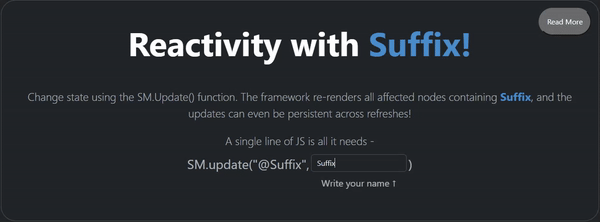
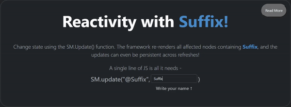

Documentation
General Ideas
Stateful Markup is a framework that does not work on existing popular territories. It is built with it's peculiar market in mind, and therefore, takes some unique paths to get there.
At a bird's eye view, these are roughly the stages it follows -
Why do we need copies of original DOM tree?
There are essentially two types of DOM trees needed for rendering, but we use three, and I'll explain why that is shortly.
The Elements Tree - This is basically a reference DOM tree that the framework uses to keep track of where the variables are all located. If we did not save this, then after any variable was replaced, ie. '@name' with 'yash', next time @name had an update we wouldn't be able to find the @name variable in the DOM tree. We need to ensure we dont lose the positions of all variables and hence the reference tree is critical.
The Mirror & Shard - These are two copies of the DOM tree, the mirror is the one currently under display and the Shard is the one that gets edited whenever a new update occurs. The reason we keep two copies is for the purpose of double buffering so that the user has consistent view into the app.
What is Double Buffering and why do we need it?
Lets try to understand the need of double buffering with an example. Imagine a picture of a red house being displayed on an app you are browsing. The app receives a command to change the color of the walls of the house to green [just like we update the variables in SM]. Now, the app will slowly paint over the walls of the house, and during this time frame, you would be able to see half painted walls in red and green. Thats an inconsistent state.
Instead of doing all that, what if I make a copy of the house ( I know that sounds ridiculous :) ) and once all the painting was done replaced the red house with the green one ? That would make it so that you would see the house in a complete state all the time rather in a weird half painted state.
This is what double buffering achieves. We keep two sets of DOM trees (houses in our previous analogy) and paint one of them when an update arrives, and replace the old DOM tree with the new one when the update has finished. This leads to a more consistent viewing experience.
Read more about it here: https://en.wikipedia.org/wiki/Multiple_buffering#External_links
What are Subscribers?
The framework works on a Pub-Sub like model. Subscribers are those HTML tags which contain the
special "_sm" class, which grants them visibility to the framework and
special powers like reactivity. Any subscriber provides these
special powers to its children elements too. Therefore, there can never be two elements
that contain this special class of which one is ancestor of the other, otherwise bad things
happen.
Any element that does not have an ancestor with this special class is in effect invisible to
this
framework and will never be modified by any state updates, components, constructs like if/for
and
so on.
The framework gets all subscribers once before the first render, and keeps track of them. If you
dynamically add / remove the _sm class using custom javascript, you will have to manually inform
the framework about it.
<div class="_sm extra-class-one"> <- This entire div, and anything within it is now changeable through the framework
Some text, some <div id="uid-1">...Nested Structure... </div> <- But don't add the _sm tag here, the framework will break due to recursive updates.
</div>
Ideally, the subscribers of the framework should be as deep as possible for
maximal performance. This is because with each change, the entire subscribed DOM
tree changes, and hence if @vars exist only at a great depth, then their
ancestors will
get unnecessarily updated.
However, remember that premature optimization is often the bane of developer productivity. Stateful markup is highly performant usually, so you very very rarely need to do optimizations like the following:
Can be optimized to ->
Now the only div with class parent does not need to rebuild on change, only its children do.
However, remember that premature optimization is often the bane of developer productivity. Stateful markup is highly performant usually, so you very very rarely need to do optimizations like the following:
<div class="parent _sm">Some content.<div class="sibling-1">@var1</div><div class="sibling-2">@var2</div></div>
Can be optimized to ->
<div class="parent">Some Content.<div class="sibling-1 _sm" class>@var1</div><div class="sibling-2 _sm">@var2</div></div>
Now the only div with class parent does not need to rebuild on change, only its children do.
What are Transforms?
A transform is composed of 3 important parts. The element, the mirror and the shard. They are the crux of what converts the original DOM tree into a reactive display.
Elements
Elements are original DOM nodes, as written by the site creator, completely untouched
by the framework. In effect they contain all the various special variables, components and
constructs in their textual form - @var, @@component, @_if .... etc.
The framework stores an unaltered copy of them, and then clones them to add reactivity to them,
and only modifies and displays these clones.
Before the JS has a chance to load, the user might see a momentary flash of elements that have not yet had the chance to get injected in their '@Var-name' form. To stop this, use
class="_sm_HideUntilReady" style="opacity: 0;" either on the body(does not have to be a subscriber) to hide the entire body until ready or on each subscriber individually.
Mirrors
Mirrors are the DOM trees that are currently being displayed to the user. When you push an
update,
and the display changes, that means a new mirror with the respective changes has replaced the
older DOM
tree in the document, which is why the changes can be seen.
Shards
Shards are the future mirrors under construction. Every time an update is published, the
framework clones the original element and the injects the changes into the shard. Each shard
goes through many stages before it is ready to replace the mirror. These stages, in order are :
External Stateless Update, Value Injection, Construct Injection, Event Binding and then it is
finally ready to replace the current mirror.
(Read below to learn in detail about each stage.)
After the shards finish getting constructing, the mirrors then get replaced by the shards, and the shards get nulled.
What is Value Injection?
Value Injection is the method by which framework really maintains reactivity, the process
involves updating the @vars present in a shard with the current values as published. The
_SM_ValueInjector class maintains a mapping of each variable and their value, which gets updated
with each update/publish call.
If you think about it, the markup injected in a component is similar to a any
data being injected through an
Ofcourse, components also have listeners and events associated with them, which are handled as normal.
@var. So, when a component is
registered and used, the framework publishes a variable with
var = @component-name and value = template of the
component.
Ofcourse, components also have listeners and events associated with them, which are handled as normal.
What are Constructs?
Constructs are an abstraction that support usage functions common in other functions and help
write shorter, less verbose code. There are 2 basic constructs : If and For. The If construct
conditionally renders the DOM elements inside if it evaluates to true. The For construct expands
a list shared in the header, and displays it as the markup indicates.
What is Construct Injection?
Construct Injection is the method by which @_for and @_if constructs really come alive. The
framework evaluates the array/condition passed into the header of these constructs and
accordingly expands/displays the body of the construct. The body of the construct is marked by
two special brackets- @{ and }@ to indicate their start and end.
Creating new constructs to suit you use case is very simple. The code follows
basically two stages:
Finding the markers : Markers are a way to indicate to the framework that a construct is present in the markup. There are 3 marker -
The second stage is executing the construct. The code grabs the construct type and then switches to a function that knows how to handle it.
Constructs are
Finding the markers : Markers are a way to indicate to the framework that a construct is present in the markup. There are 3 marker -
'@_', '@{' and '}@'. The @_ follows a name which is
the type of construct. Then a pair of brackets follow, containing the header,
like a list or a variable. @{ and }@ contain the body of the construct. This
will typically be some type of markup that gets modified and displayed by the
construct, but can really be anything you wish.
The second stage is executing the construct. The code grabs the construct type and then switches to a function that knows how to handle it.
Constructs are
best used when there is a
particular pattern that you often need to execute in code. The most common
ones I felt were useful was conditional rendering and list expansion, which
is why I built those.
What is Event Binding?
When a DOM tree is cloned, the resulting clone tree does not keep any event listeners attached
to the original tree. So to keep the event listeners attached to the mirrors, we use the
addEventListener function provided by the framework and register the event listeners there, so
that with each update we re-add the event listeners to each shard.
Time to update Transforms!
Now that all the stages are over, we replace the mirrors currently on display with the
corresponding shards.
Batched Rendering
Batched rendering is the a way of increasing performance and taxing user devices less. When an
update is performed, the framework waits for a few milliseconds hoping for some other updates to
also come, (this is often true if some updates happen together, such as as sign-out UI change
also triggering some changes in the nav-bar etc) and then performs the updates all together.
This saves some processing power and can lead to a smoother UI. The wait time is always supposed
to be low enough, the the user does not notice this delay, typically 16ms(60 fps) or 33ms(30
fps).
By virtue of the fact that Stateful Markup borrows some of its architectural
design from game engines, it is able to easily switch up the frame rate, ie. the
time between each batched render.
To toggle this, use the following code, and refresh the page:
Now, each update will take a second to show up. This can be useful to tune according to your users needs if they have slower/faster devices, from 1 FPS to 120 or more.

To toggle this, use the following code, and refresh the page:
StatefulMarkupConfig.TARGET_FRAMERATE = 1
Now, each update will take a second to show up. This can be useful to tune according to your users needs if they have slower/faster devices, from 1 FPS to 120 or more.

What are Persistent Updates?
Stateful Markup offers publishing updates to your local storage so that even when your website
is closed and reopened later some state can be preserved. For example if the user was logged in,
you can simply save their user name and display it automatically when they re-open your website.
What do you mean by Wasteless DOM Updates?
When an update does not cause any noticeable change in the UI, the framework smartly discards
creating a shard and updating the mirror. For example publishing a @variable that exists in only
a small set of DOM trees, causes only these DOM trees to get updated.
This allows for performant rendering, especially with larger DOM trees.
Orthogonally Designed
Orthogonal design is a philosophy of creating tools that can layer on top of existing processes,
and dont need the creator to change their pre-existing codebase to use them. They simply add
features, and dont impinge other functions. These can be dropped onto an older project and
simply work, without causing trouble with the other libraries, tools and other frameworks you
might be using.
Stateful Markup tries to be very orthogonal, letting you keep as much of your code as possible. If you were manually manipulating the DOM tree through external JS, the framework provides a convenient wrapper a one line wrapper so that you can keep that. If you were using custom event listeners, the addEventListener allows you to keep the code you had already written.
The variables/constructs are named starting with '@/@_' to minimize chances of the framework misidentifying normal text. Similarly, the _sm class and the every function in the StatefulMarkup.js file starts with _SM_ prefix, so that it does not interfere with existing libraries.
In short, framework tries to assume as little as possible about the existing DOM tree, or existing JS, so that whatever be the project, a minimal amount of changes are required.
Components
When I designed Stateful Markup, a useful feature that could get neatly implemented was
Components.
Components are a nice coupling of
They can offer a greatly ergonomic experience & extensibility in your website (with a small
tradeoff in performance).
They allow ma rkup and event listeners for the footer, the nav-bar, dashboard components and
other oft-repeated items to be written once, imported anywhere, leading to a cleaner code-base.
They also couple the state, events handling and the markup together, so there is just a single
source of truth for such stuff.
Remember that state is global, so be descriptive in your variable names!
const DashboardComponent = { <- Declare a component to register.
name: 'Dashboard', <- Use the string @@Dashboard in any subscribed class to display
template: ` <- Use the string @@Dashboard in any subscribed class to display the following instead
<div id="dash" class="container-fluid h-100 justify-content-start rounded">
<div class="display-6 p-4 text-danger">Super Secret Dashboard</div>
<div class="lead fs-4 py-1">Welcome @Suffix</div>
<button class="btn btn-outline-success text-start fw-semibold fs-6">Launch Penguins into North Korea</button>
</div>
`,
eventListeners: [{ <- Pass an array of event listeners to execute, typically scoped to work only on this component
selector: '#dash .btn', onEvent: 'click', callback: () => {
alert('Penguins launched!')
}
}],
events: [] <- Pass in a set of events, that get executed as soon as the component is registered. Note: They use the publish API, instead of the update API.
}
StatefulMarkupClient.registerComponent(DashboardComponent) <- Registering a component makes it visible to the framework. An unregistered component is unable to get injected.
`
Reconciliation Phase
When a DOM tree is cloned, it does not preserve certain states like the focused element, a
checked box or radio button, or the text selected in an input box. These properties have to be
preserved separately. For this, the framework calls a saveState function, that reads these
special properties, and after the transforms get updated, it reconciles these saved properties
back to the DOM tree.
Right now the save and reconcile process is still under work.
The goal is to build a generic
method of saving and reconciling that does not require any user input, instead right now what we
have in working is are different types of reconciliations on a per-case basis
(ie. different
functions for inputs, checkboxes, radio-groups etc).
The code to build such functions is pretty simple, I've built one to preserve focus for text input elements. I welcome and appreciate any effort to help build such plugins for supporting different input types.
static saveInputState(evt: ReconcilliationEvent) { <- The evt contains the a selector to indicate which DOM element we are saving state of.
let currentState: ReconcilliationEvent = { on: 'input-text', selector: evt.selector }
let selector = evt.selector
let element = document.querySelector(selector) <- Get the to be saved element.
if (element === null)
return _SM_Log.log(2, 'Save state element not found, selector: ' + selector)
<- Now we are going to save the properties we wish to preserve like focus, and text selected
currentState.wasFocused = (document.activeElement === element) + '' <- Checks if this element was focused on.
currentState.selectionStart = element.selectionStart <- Finds the start of text selection, ie. cursor start
currentState.selectionEnd = element.selectionEnd <- Similar to above
this._savedStates.push(currentState) <- Put the saved properties for reconciling later.
}
static reconcileInputState(save: ReconcilliationEvent) { <- save is one of the possibly many saved elements reconciled.
let element = document.querySelector(save.selector) <- Extract the element from the new DOM tree.
if (element === null)
return _SM_Log.log(2, 'Cannot find element to reconcile - ' + save.selector)
if (save.wasFocused === 'true') {
(element as HTMLElement).focus()
}
<- Re-add focus if it was focused before the render happened.
element.setSelectionRange(save.selectionStart, save.selectionEnd)
}
While this works fine, its not very scalable to have to write such reconcilliation events for each type of DOM element you wish to preserve.
Whats great is that since Stateful Markup is opt-in for any DOM tree, you can still use anywhere else on the page.